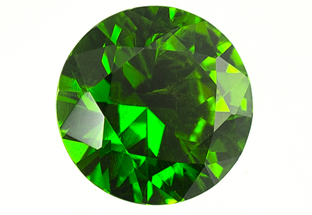

le grenat démantoide
Système cristalin : cubique
Indice de réfraction : 1,870 à 1,890
Densité : 3,8 à 3,9
Dureté : 7,5
Couleur : vert
Particularité : peut rétablir quart de tour au polariscope
Image :
